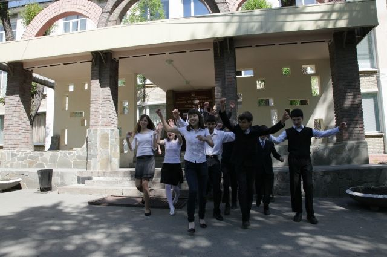

Лицей №31 вырос из Физико-Математической Школы № 31, которая была открыта в 1965 году. Статус лицея утвердился в 1991 году. Учебное заведение позиционирует себя как место для развития интеллекта, творческих способностей и гражданской позиции.
Обучение в лицее начинается с 5-го класса, зачисление производится в 5-ый и 8-ой классы по итогам занятий в воскресной физико-математической школе. Записаться в воскресную школу могут все желающие ученики, обучение ведется 1 год. Зачисляются в лицей учащиеся, занявшие высокие рейтинговые места. Кроме того, поступить в лицей можно по результатам собеседования. Кроме того, в лицее ведутся занятия в кружках, посвященных робототехнике, каллиграфии, мультипликации, имеется клуб любителей кино, театральная мастерская и многое другое.
